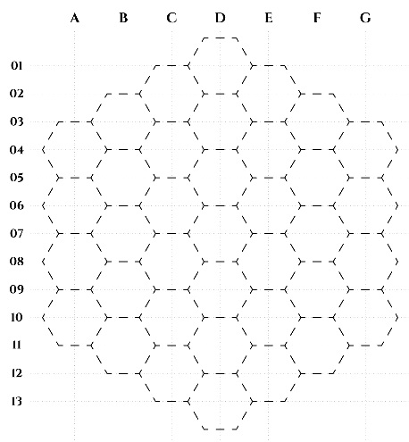

Maps

LOCATIONS
Earth Portal
One-way portal leading from Earth; extremely ancient, judging from its being embedded in rock.
St. Irene
St. Irene, the centere of the Diocese of New Canaan.
Temple of Semu
A ruined temple once dedicated to Semu, a fallen angel who posed as a deity to the lizardmen in the remote past.
Home